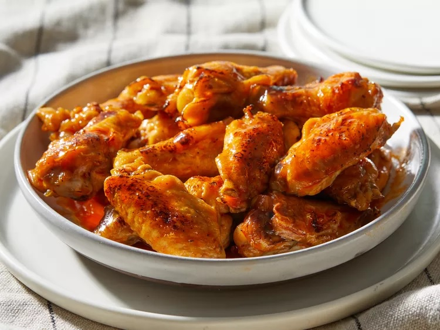

Spicy Wings

Overview
This delicious recipe of one of my favorite dishes should only take an overall time of 45 minutes.
The ingredients list shouldn't be too extensive, and most of these ingredients can be found in the cabinet!
The end result should be a creamy, yet delicious, plate of hot wings that'll make you say "B-Dubs who?"
Ingredients
- 6 pounds of chicken wings, separated at joints, tips discarded
- 1 1/2 cups of Louisiana-style hot sauce
- 1 cup honey
- 3/4 cup of butter
- 1 teaspoon of cayenne pepper
- 1 pinch garlic salt
- 1 pinch ground black pepper
Steps
- Preheat an outdoor grill for high heat. Lightly oil the grill grate.
- Grill chicken on the preheated grill until the juices run clear, 8 to 12 minutes per side. Remove chicken to a large roasting pan.
- Mix together hot sauce, honey, butter, cayenne pepper, garlic salt, and black pepper in a saucepan over medium heat. Simmer until blended and heated through, about 10 minutes.
- Pour hot sauce over chicken and stir to coat.